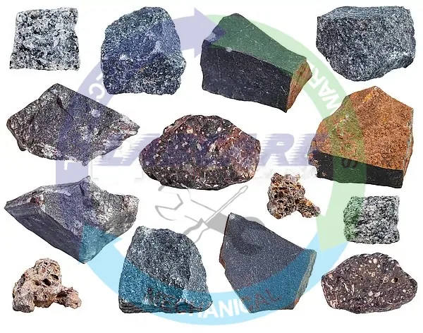
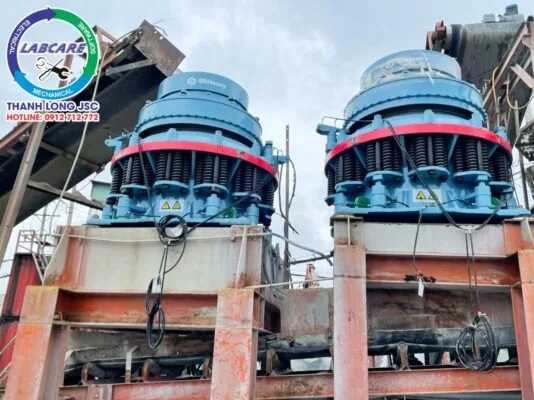
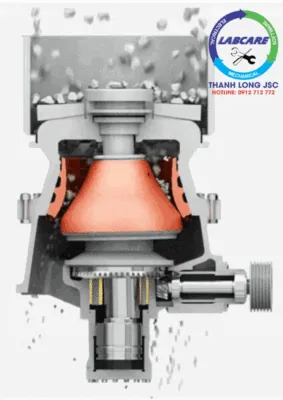
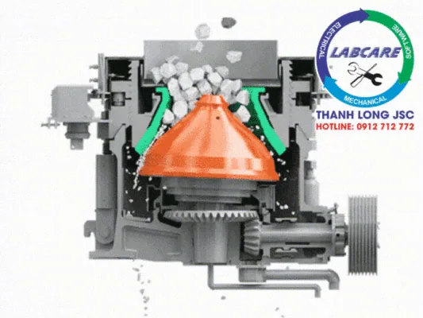

Bazan là một loại đá phổ biến nhất trên trái đất, thường có màu xám đến đen. Có độ cứng và khả năng chịu lực cao, giữ nhiệt, cách âm và không chịu tác động của thời tiết. Với các ưu điểm đó, đá Bazan được sử dụng phổ biến vào các công trình xây dựng có quy mô lớn nhỏ khác nhau. Hiện các mỏ đá Bazan ở Việt Nam có độ mài mòn cao, đang sử dụng các trạm máy nghiền đá Bazan do Thanh Long lắp đặt. Có công suất từ 100 đến 500 tấn/giờ, chủ yếu làm vật liệu bê tông mác cao.
Mức độ phân bố Đá Bazan cũng như các Dàn Máy Nghiền Đá Bazan Thanh Long
Tại Việt Nam loại đá này phân bố chủ yếu các tỉnh ở Bắc Trung Bộ, Nam Trung Bộ và Tây Nguyên như:. Bình Định, Quảng Ngãi. Nghệ An, Hà Tĩnh. Gia Lai, Kon Tum, … Ngoài ra Trung Du và Miền Núi Phía Bắc, các khu vực có Đá Bazan sở hữu diện tích hẹp. Nằm rải rác ở một số khu vực thuộc Tỉnh Lào Cai, Yên Bái, Sơn La, …Theo đó, Máy nghiền đá Bazan Thanh Long cũng nằm rải rác theo mật độ phân bố của Đá Bazan.

Lựa chọn thiết bị phù hợp tính chất vật lý đá Bazan
Lựa chọn nhà cung cấp máy nghiền đá Bazan chất lượng, uy tín. Cam kết đạt đủ công suất đầu ra. Và điều quan trọng nhất là sơ đồ công nghệ đưa ra tối ưu về mọi mặt, phù hợp trong sản xuất VLXD.
Với độ cứng lớn cho nên, không thể sử dụng các thiết bị nghiền búa văng thông thường. Gây ra tình trạng thay vật tư hao mòn rất nhanh, tuổi thọ máy giảm. Thiết bị phù hợp với tính chất vật lý Đá Bazan, là Máy Nghiền Côn Thanh Long.
Từ sơ đồ công nghệ, phương án đầu tư và lựa chọn thiết bị do Thanh Long đưa ra. Dựa trên kinh nghiệm được tích lũy từ 49 dự án máy nghiền đá Bazan đã và đang lắp đặt. Các thiết bị chính được nhập khẩu hoàn toàn từ các nước Mỹ, Châu Âu, … Các phần chân đế sắt xi sẽ được nhập khẩu vật tư sắt có độ dày đạt chất lượng. Được gia công trong nước nhưng theo tiêu chuẩn đồng bộ Châu Âu, Mỹ, … Nhằm giảm chi phí đầu tư cho khách hàng về chi phí vận chuyển cẩu kéo. Máy nghiền côn Superior còn được bảo hành lên đến 24 tháng từ chính nhà sản xuất.
Thiết bị “chủ chốt” trong Trạm Máy Nghiền Đá Bazan
Máy nghiền côn là thiết bị quan tâm nhất ở trạm máy nghiền đá Bazan. Máy nghiền côn Superior – Công Nghệ Mỹ được ưa chuộng nhất tại Việt Nam.
– Lực nghiền, năng suất, sản lượng cao hơn so với các loại máy nghiền côn của những hãng khác
– Chất lượng sản phẩm tuyệt đối: cho ra những hạt đồng đều và giảm được tỉ lệ vỡ vụn
– Có thể hoạt động liên tục trong nhiều giờ
– Tính khả dụng và thiết kế đặc biệt, tuổi thọ cao: Chế tạo máy bằng hợp kim đặc biệt, có khả năng chịu lực, chống bám dính, thích ứng cao với điều kiện vận hành khắc nghiệt.
– Tiêu thụ điện năng thấp hơn tới 20% so với các máy nghiền côn khác
– Máy có kết cấu đơn giản, tiện lợi, dễ dàng khi vận hành và bảo dưỡng
– Duy trì áp lực cố định của nón tĩnh và nón động bằng cụm kích thủy lực và nêm khóa
Máy nghiền côn bán thủy lực làm được gì trong trạm Máy Nghiền Đá Bazan ?
– Điều chỉnh khe xả theo yêu cầu
– Duy trì áp lực để cố định nón tĩnh và nón động
– Chống kẹt đá hoàn toàn tự động:. Khi có mũi khoan, răng gầu (vật liệu bằng sắt cho xe cuốc xe xúc gây kẹt đá). Hệ thống thủy lực nâng nón tĩnh của máy nghiền đá bazan lên, răng gầu rơi ra ngoài. Sau đó hệ thống thủy lực tự điều chỉnh khe xả liệu về vị trí ban đầu, và tiếp tục quá trình nghiền.
Các loại máy nghiền côn Thanh Long
-
Máy Nghiền Côn Lò Xo Bán Thủy Lực có doanh số bán hàng khá chóng mặt
Máy nghiền côn lò xo bán thủy lực là máy nghiền đời mới (Symons) Công Nghệ Mỹ. Có hệ thống thủy lực để điều chỉnh khe xả, hoặc dùng hệ thống thủy lực để cố định nón tĩnh và nón động. Được sử dụng rộng rãi trong ngành VLXD, công nghiệp xây dựng, công nghiệp luyện kim, …
Ưu điểm:
– Điều chỉnh và kiểm soát khe xả liệu, so với kiểu nghiền côn lò xo truyền thống.
– Xử lý chống kẹt hoàn toàn tự động trong khoang nghiền do mất điện đột ngột hoặc khi có dị vật bằng sắt không nghiền được.
– Giá thành thấp hơn so với nghiền côn thủy lực hoàn toàn.

-
Máy Nghiền Côn Thủy Lực Đơn Xy Lanh

Cấu tạo thiết kế độc đáo, hình nón. Tần số vòng quay cao và khoảng cách lệch tâm nhỏ. Sử dụng 1 xy lanh để đỡ nón động, nên có thể điều chỉnh độ mở xả trực tiếp. Ngăn vật liệu sắt rơi vào khoang nghiền.
-
Máy Nghiền Côn Thủy Lực Đa Xy Lanh

Máy Nghiền Côn Thủy Lực Đa Xy Lanh, thích hợp để nghiền các loại quặng và đá có độ cứng trung bình trở lên. Chẳng hạn như:. Đá Bazan, đá vôi, quặng sắt, đá cuội, … Sử dụng nhiều xy lanh để đỡ nón tĩnh, có ưu điểm như:. Khả năng chịu lực tốt hơn, khả năng điều chỉnh khe xả liệu tốt hơn. Chống tắc tự động tốt hơn, dễ bảo dưỡng thay thế và tuổi thọ của máy cao hơn so với loại đơn xy lanh.
Báo giá nhanh nhất xin liên hệ (miễn phí): 0912.712.772
Thanh Long JSC chuyên cung cấp :
- Trạm nghiền cát/đá: Máy kẹp hàm, máy nghiền côn, sàng rung phân loại, máy nghiền cát, trạm nghiền đá di động, …
- Công nghệ rửa/tách: Máy rửa cát theo module, sàng rung tách nước, máy tách cát mịn, máy thu hồi cát mịn,..
- Thiết bị phụ tùng, vật tư: Dao nghiền, lưới sàng, má kẹp, nón côn,...
Kênh video Youtube: Thế giới máy nghiền đá
Website: https://thegioimaynghienda.com
#bn